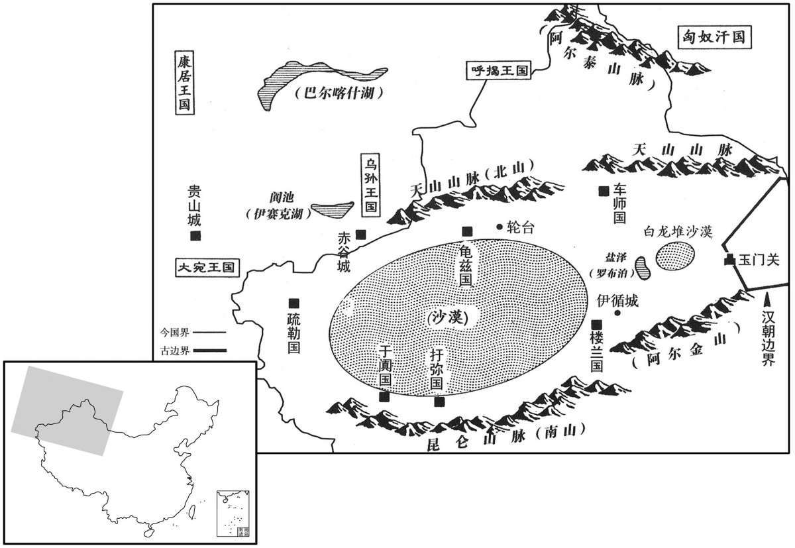

公元前77年资治通鉴：本年记事、原文与白话对照
按原书编年位置阅读；追叙和史论不等于本年发生的事件。白话采用所据译本，缺译不以生成译文补齐。
卷23 · 本年记事
公元前77年 · 汉孝昭皇帝元凤四年
元凤四年〔（甲辰、前七七）〕
本年事件索引（现代整理）

本年形势与背景参考图
春，正月，丁亥，帝加元服。〔如淳曰：元服，谓初冠加上服也。师古曰：如氏以为衣服之服，非也。元，首也。冠者，首之所着，故曰元服。汲黯序传云：上正元服。是知谓冠为元服。余按续汉志有加元服之礼。〕
春季，正月丁亥（初二），汉昭帝举行加冠典礼。
甲戌、富民定侯田千秋薨。〔谥法：安民大虑曰定。〕时政事壹决大将军光；千秋居丞相位，谨厚自守而已。
甲戌（疑误），富民侯田千秋去世。当时的国家政事全部由霍光一个人决定，田千秋身居丞相之位，只是谨慎稳重，自我保全而已。
夏，五月，丁丑，孝文庙正殿火。〔人火曰火。〕上及群臣皆素服，发中二千石将五校作治，〔将作大匠属官有左、右、前、后中五校令，掌五校士。校，户教翻。〕六日，成。太常及庙令丞、郎、吏，皆劾大不敬；〔劾，户概翻。〕会赦，太常轑阳侯德免为庶人。〔班表，轑阳侯食邑清河。文颖曰：轑阳在魏郡清渊。轑，音料，又音聊。〕
夏季，五月丁丑（疑误），汉文帝祭庙正殿失火。汉昭帝与群臣一律身穿素服，并派中二千石官员率领左、右、前、后、中五校令所属工匠修复，崐六天后修复完毕。太常以及负责管理、守卫祭庙的令丞、郎及所属官吏等全部因此而被以大不敬的罪名遭到参劾。正巧遇到大赦，太常、阳侯德被免除官爵，贬为平民。
六月，赦天下。
六月，大赦天下。
初，杅冞遣太子赖丹为质于龟兹；〔龟兹国治延城，去长安七千四百八十里。杅，音乌。冞，与弥同。质，音致；下同。龟，音丘。兹，音慈。贤曰：今龟音丘勾翻，兹音沮惟翻，盖急言之也。〕贰师击大宛还，〔事见二十一卷武帝太初元年。宛，于元翻。〕将赖丹入至京师。霍光用桑弘羊前议，以赖丹为校尉，将军田轮台。〔弘羊议田轮台，见二十二卷征和元年。〕龟兹贵人姑翼谓其王曰：“赖丹本臣属吾国，今佩汉印绶来，迫吾国而田，必为害。”王即杀赖丹而上书谢汉。
当初，国派太子赖丹到龟兹国去作人质，贰师将军李广利攻击大宛回朝时，将赖丹带到京城长安。霍光采用桑弘羊以前的建议，任命赖丹为校尉，率领军队前往轮台屯田。龟兹贵族姑翼对龟兹国王说：“赖丹本来是我国的臣属，如今却佩戴汉朝的印信、绶带前来，在逼近我国边境的地方屯垦，必将给我国造成危害。”于是龟兹王派人杀死赖丹，然后上书汉朝谢罪。
楼兰王死，匈奴先闻之，遣其质子安归归，得立为王。〔考异曰：西域传作“常归”，今从昭纪及傅介子传。〕汉遣使诏新王令入朝，王辞不至。楼兰国最在东垂，〔西域之东垂也。〕近汉，当白龙堆，〔孟康曰：白龙堆，形如土龙身，无头有尾，高大者三四丈，埤者长丈余，皆东北向而相似也。近，其靳翻；下同。〕乏水草，常主发导，负水担粮，送迎汉使；〔担，都甘翻。〕又数为吏卒所寇，惩艾，不便与汉通。〔师古曰：艾，读曰乂。数，所角翻。〕后复为匈奴反间，〔间，古苋翻。〕数遮杀汉使。其弟尉屠耆降汉，具言状。骏马监北地傅介子使大宛，〔班表，太仆属官有骏马监。北地郡属凉州刺史。姓谱：傅说出傅岩，因以为氏。〕诏因令责楼兰、龟兹。介子至楼兰、龟兹，责其王，皆谢服。介子从大宛还，到龟兹，会匈奴使从乌孙，在龟兹，介子因率其吏士共诛斩匈奴使者。还，奏事，诏拜介子为中郎，迁平乐监。〔平乐监，监平乐观。乐，音洛。〕
楼兰国王去世，匈奴最先听到这一消息，便将在匈奴充当人质的楼兰国王子安归护送回国，安归得以当上楼兰国王。汉朝派使臣前往楼兰国传达汉昭帝的诏令，命新即位的楼兰王来长安朝见，楼兰王推辞不来。楼兰国位于西域的最东部，靠近汉朝，中间隔着白龙堆沙漠。此地缺乏水源、牧草，以往楼兰国经常负责派出向导，命人背水担粮，迎送汉朝派往西域各国的使者。因多次受到汉朝官吏和兵卒的欺扰，楼兰国逐渐对汉朝产生了戒惧，不愿再与汉朝来往。后来，又受了匈奴的离间，多次拦杀汉朝使臣。楼兰王安归的弟弟尉屠耆归降汉朝，将内情一一报告汉朝。担任骏马监的北地人傅介子出使大宛，汉昭帝下诏命其顺路去责问楼兰、龟兹两国。傅介子来到楼兰和龟兹，责问两国国王为何背叛汉朝，两国都表示道歉服罪。傅介子从大宛回来，又到龟兹，正好匈奴使臣从乌孙返回，正在龟兹，于是傅介子率其随从官兵一同将匈奴使臣杀死。回国后，傅介子向朝廷报告了此事，汉昭帝诏封傅介子为中郎，改任平乐监。
介子谓大将军霍光曰：“楼兰、龟兹数反复，而不诛，无所惩艾。介子过龟兹时，其王近就人，易得也；愿往刺之以威示诸国！”〔易，以豉翻。刺，七亦翻；下同。〕大将军曰：“龟兹道远，且验之于楼兰。”于是白遣之。介子与士卒俱赍金币，扬言以赐外国为名，至楼兰。楼兰王意不亲介子，介子阳引去，至其西界，使译谓曰：〔班表，大鸿胪有译官令，典属国有九译令，皆掌译。此译，则楼兰国之译人。〕“汉使者持黄金、锦绣行赐诸国。王不来受，我去之西国矣。”即出金、币以示译。译还报王，王贪汉物，来见使者。介子与坐饮，陈物示之，饮酒皆醉。介子谓王曰：“天子使我私报王。”〔师古曰：谓密有所论。〕王起，随介子入帐中屏语，〔屏人而独共语也。屏，必郢翻。〕壮士二人从后刺之，〔刺，七亦翻。〕刃交匈，立死；〔匈，与胸同。〕其贵臣、〔【章：甲十五行本“臣”作“人”；乙十一行本同；孔本同。】〕左右皆散走。介子告谕以王负汉罪，“天子遣我诛王，当更立王弟尉屠耆在汉者。〔更，工衡翻。〕汉兵方至，毋敢动，自令灭国矣！”介子遂斩王安归首，驰传诣阙，县首北阙下。〔传，张恋翻。县，古悬字通。〕
傅介子对大将军霍光说：“楼兰、龟兹两国多次反复，不诛杀，就无所惩戒。我经过龟兹时，发现龟兹王接近外人，对付他容易得手。我愿意去刺杀他，以此向西域各国显示汉朝之威。”大将军说道：“龟兹路远，且先到楼兰去试试。”于是禀告汉昭帝，派傅介子前去刺杀楼兰国王。傅介子率领卫士，携带金银财物，宣称要赏赐外国，借此名义来到楼兰。楼兰王不愿亲近傅介子，傅介子便假装离去，到达楼兰西部边界时，让翻译人员对楼兰国王说：“汉朝使者携带黄金、绸缎等一路对各国进行赏赐，大王如不来接受，我就离开这里到西边国家去了。”随即拿出黄金、财宝等给翻译看。翻译回去向楼兰王报告，楼兰王贪图汉朝财物，便前来面见汉使。傅介子与其共坐饮酒，故意将金宝等陈列显示。一直喝到大家都醉了，傅介子对楼兰王说：“汉朝天子让我秘密报告大王。”于是楼兰王起身随傅介子进入后帐，屏退侍从人员密谈。突然崐，两名壮士从背后刺向楼兰王，利刃穿胸相交，楼兰王立即死亡。楼兰国的贵族大臣、侍从人员等四散逃亡。傅介子宣告楼兰王背叛汉朝之罪，说道：“天子派我诛杀楼兰王，应改立在汉朝的王弟尉屠耆为王。汉军立即就到，不要轻举妄动，否则将自己招来灭国之祸！”傅介子于是将楼兰王安归的人头割下，用驿马快速送到皇宫，悬于未央宫北门之外。
乃立尉屠耆为王，更名其国为鄯善，为刻印章；赐以宫女为夫人，备车骑、辎重。〔更，工衡翻。鄯，上扇翻。为刻，于伪翻。重，直用翻。〕丞相率百官送至横门外，祖而遣之。〔三辅黄图：横门，长安城北出西头第一门。孟康曰：横，音光。祖，祖道也。〕王自请天子曰：“身在汉久，今归单弱，而前王有子在，恐为所杀。国中有伊循城，其地肥美，愿汉遣一将屯田积谷，令臣得依其威重。”于是汉遣司马一人、吏士四十人田伊循以填抚之。〔填，读曰镇。〕
汉朝立尉屠耆为楼兰王，改国名为鄯善，并颁刻印章，赐给尉屠耆宫女做夫人，又为他准备了车马、辎重，由丞相率领文武百官送至长安横门之外，祭祀路神，置酒饯行，然后送其回国。尉屠耆自己向汉昭帝请求说：“我久居汉朝，如今回国后势单力弱，况且前王之子尚在，恐怕被其报复杀害。我国有一处地方叫作伊循城，土地肥沃，希望汉朝能派一位将军，在伊循城一带屯田，聚积粮食，使我能够借重汉朝的兵威。”于是汉朝派司马一名、部属四十人到伊循城屯田，以镇抚鄯善国。
秋，七月，乙巳，封范明友为平陵侯，〔赏破乌桓之功也。班表，平陵侯食邑于南阳之武当。〕傅介子为义阳侯。〔班表，义阳侯食邑于南阳之平氏。〕
秋季，七月乙巳（二十三日），汉昭帝封范明友为平陵侯，傅介子为义阳侯。
史家评论 · 原文及其白话
臣光曰：王者之于戎狄，叛则讨之，服则舍之。〔舍，读曰舍。〕今楼兰王既服其罪，又从而诛之，后有叛者，不可得而怀矣。必以为有罪而讨之，则宜陈师鞠旅，〔毛诗注曰：鞠，告也。将战之日，陈其师旅，誓告之也。〕明致其罚。今乃遣使者诱以金币而杀之，后有奉使诸国者，复可信乎！〔复，扶又翻。〕且以大汉之强而为盗贼之谋于蛮夷，不亦可羞哉！论者或美介子以为奇功，过矣！
臣司马光曰：圣明的君王，对待戎狄外族的态度应当是：如果背叛，就发兵征讨；如果臣服，就不再追究。如今楼兰王既已服罪，却又加以诛杀，则以后再有背叛者，就不能使他们归附了。如果认为楼兰王有罪，一定要征讨，也应堂堂正正地派遣军队，公开地施行惩罚。而今竟派使臣用金宝财物进行引诱，然后乘机将其杀死，以后再有奉命出使各国的使者，还能再让人信任吗！况且以大汉朝的强盛，竟然用盗贼的诡计来对付蛮夷外族，实在令人羞耻！有人评论此事，赞美傅介子立了一件奇功，未免太过分了。